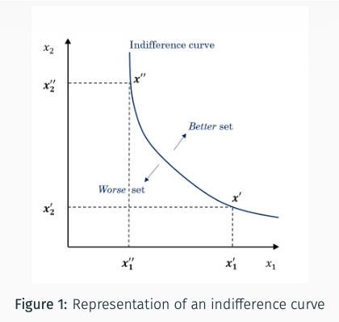

4. Consumer’s Preferences: Reasonable Assumptions
Monotonicity, convexity, homotheticity, separability, and numéraire properties: definitions, economic intuition, and their meaning for utility.
In Chapters 1–3, we studied how an individual ranks alternatives and chooses from a choice set. Consumer theory gives these alternatives a concrete meaning: each $x\in X$ is a consumption bundle, specifying a quantity of each good.
This makes the choice problem more specific. Preferences describe which bundles the consumer values more; prices and the budget determine which bundles are affordable. The consumer’s choice depends on both.
From preferences to choices: Specify properties of preferences, then determine which affordable bundles the consumer would choose. Chapter 4 develops the preference assumptions used in this approach.
From choices to preferences: Observe the chosen bundles and the alternatives that were affordable. Then ask which preference rankings could explain those choices. This is the revealed-preference approach developed in Chapter 5.
Rationality requires a complete and transitive ranking. With continuity, preferences on the consumption set considered here admit a continuous utility representation $u$. In the two-good case, bundles with the same utility lie on the same indifference curve: the consumer is indifferent between them.
These properties alone do not tell us whether receiving more of a good is desirable, or whether a mixture of two bundles is preferred to either one. To answer such questions, we need assumptions about how the ranking responds to changes in quantities. This chapter studies five:
- Monotonicity: More of some goods, with no reduction in the others, does not make the consumer worse off.
- Convexity: If two bundles are each at least as good as a benchmark, any weighted average of them is also at least as good.
- Homotheticity: Scaling both bundles by the same positive factor preserves their ranking.
- Separability: The ranking of alternatives within one group of goods remains unchanged when the common quantities of other goods change.
- Numéraire properties: One good, interpreted as money, provides a way to express compensation for changes in other goods.
Each assumption restricts preferences in a particular way. Rationality by itself does not require all five.
Let $X=\mathbb{R}_+^n$ be the consumption set. A bundle $x=(x_1,\ldots,x_n)$ lists the nonnegative quantity of each good. To compare quantities, we check each good separately. The notation $x\geq y$ means $x_i\geq y_i$ for every good $i$: $x$ contains the same amount or a larger amount of each good, and less of none. Some quantities may be unchanged. Adding $x\neq y$ means that at least one quantity is strictly larger.
- Weak monotonicity: If bundle $x$ contains at least as much of every good as bundle $y$, then $x$ is at least as good as $y$.
- Strict monotonicity: If bundle $x$ contains at least as much of every good as bundle $y$, and strictly more of at least one good, then $x$ is strictly preferred to $y$.
Weak monotonicity describes what happens when quantities increase without any decrease elsewhere: the consumer is at least as well off. It places a restriction on all such comparisons, but allows the extra goods to leave the consumer indifferent.
Local non-satiation asks a different question: can the consumer become strictly better off through a change as small as desired? It requires an improvement near every bundle, without specifying which goods must increase or decrease.
Strict monotonicity connects the two ideas. On $\mathbb{R}_+^n$, even a tiny increase in one good, with the others unchanged, is strictly beneficial. This provides the nearby improvement required by LNS. Strict monotonicity therefore implies both weak monotonicity and LNS.
Keep the amount of coffee unchanged and give the consumer a little more money. The coffee term $-(x_2-1)^2$ stays the same, while the money term $x_1$ increases. Utility therefore increases.
That extra amount of money can be as small as we wish, so the improved bundle can be arbitrarily close to the original one. This works whatever the initial amount of coffee: money always provides a way to become strictly better off.
Compare bundle $A = (1, 1)$ and bundle $B = (1, 2)$. Clearly $B \geq A$ componentwise ($1 \geq 1$ and $2 \geq 1$).
Since $u(1, 2) = 0 < 1 = u(1, 1)$, we have:
Giving more coffee strictly harms the consumer, so weak monotonicity is violated!
Intuition: If the consumer strictly prefers $x$ to $y$, then any weighted average of them, with $t\in[0,1]$, is at least as good as the worse bundle $y$. Think of moving from $y$ towards $x$: the mixture does not fall below $y$ in the ranking. Convexity does not require the mixture to be better than $x$.

This figure illustrates how monotonicity, convexity, and homotheticity translate into the geometry of indifference curves:
- Strict monotonicity: Along an indifference curve, more of one good must be offset by less of the other.
- Convexity: The curve bows inward toward the origin, meaning upper contour sets are convex.
- Homotheticity: When this additional assumption holds, proportional expansions of one indifference curve generate others; it cannot be inferred from a single curve alone.
A utility representation translates rankings into inequalities. Convexity corresponds to quasiconcavity: the utility of a mixture is at least the lower of the two endpoint utilities. Homogeneity is a property of a suitably chosen representation; an arbitrary increasing transformation need not preserve it.
| Assumption on $\succeq$ | Property of $u$ | Geometric Intuition |
|---|---|---|
| Local Non-Satiation | $u$ has no local maximum relative to $X$, including its boundary | Thick indifference curves are ruled out. |
| Strict Monotonicity | $u$ is strictly increasing | Indifference curves are strictly decreasing. Better sets must be entirely above indifference sets, and worse sets must be entirely below. |
| Convexity | $u$ is quasiconcave | Indifference curves are convex toward the origin. |
| Homotheticity + Strict Monotonicity + Convexity with the standing rationality and continuity assumptions on $\mathbb{R}_+^n$ |
A representation can be chosen homogeneous of degree 1: $u(tx)=t\,u(x)$ for $t>0$ |
All the indifference curves can be obtained by a homothetic transformation of a single one of them. |
Food: $X=\{\text{cheese},\text{pretzels}\}$.
Drink: $Y=\{\text{wine},\text{beer}\}$.
Does the ranking between cheese and pretzels depend on the drink?
In each row, both foods come with the same drink. Read $\succ$ as “is preferred to”.
Case A — Separable
Case B — Non-separable
For these foods and drinks, does the food ranking change when the common drink changes?
-
1. The numéraire good is valuable:
$$(t, y) \succeq (t', y) \iff t \geq t'$$Intuition: When the other goods $y$ are unchanged, the consumer prefers the alternative with more money. The money amount can therefore serve as a scale for comparing otherwise identical alternatives.
-
2. Compensation is possible: For every $y,y'\in Y$, there exists $t\in\mathbb{R}$ such that
$$(0,y)\sim(t,y')$$Intuition: A change from $y$ to $y'$ can be offset by an appropriate amount of money. The amount $t$ makes the consumer indifferent between the two alternatives. It expresses the value of that change in monetary terms.
-
3. No wealth effect:
$$\begin{gathered} (t,y)\succeq(t',y')\\ \implies (t+d,y)\succeq(t'+d,y') \end{gathered}$$Intuition: Adding the same amount $d$ to both alternatives preserves their ranking, even when their initial money amounts differ. The consumer’s evaluation of the trade-off between money and the other goods does not change when both alternatives become equally richer or poorer.
Money is equal within each comparison. We change its common level for both alternatives, keeping $y$ and $y'$ unchanged. The money needed to compensate for a change in $y$ may still depend on wealth.
The initial money amounts can be different. What must be equal is the amount added to each alternative, while $y$ and $y'$ remain unchanged.
Monetary compensation for a change in $y$ is therefore independent of the initial wealth level.
Separability concerns comparisons made at a common money level. No wealth effect covers those comparisons too, while also covering alternatives with different money amounts. It therefore imposes a stronger restriction.
We assume rational preferences on $\mathbb{R}\times Y$ satisfying the three numéraire properties: (1) $t$ is valuable, (2) Compensation is possible, and (3) No wealth effect.
Goal: Construct $v:Y\to\mathbb{R}$ so that $u(t,y)=t+v(y)$ represents the preference relation.
Fix an arbitrary reference bundle $\bar{y} \in Y$. Because compensation is possible, for every $y \in Y$, there exists $v(y) \in \mathbb{R}$, the money amount that makes the reference alternative $\bar{y}$ equivalent to $y$:
Indifference means that both weak comparisons hold. Apply property 3 to each comparison, adding $t$ to both alternatives:
By transitivity of $\succeq$, comparing $(t, y)$ and $(t', y')$ is equivalent to comparing their monetary equivalents at $\bar{y}$:
Because the numéraire good is valuable (Property 1), the last comparison can be rewritten purely in terms of the numéraire amounts:
We assume preferences are represented by a quasi-linear utility function $u(t, y) = t + v(y)$ for some $v: Y \to \mathbb{R}$.
Goal: Verify each of the three numéraire properties.
By utility representation:
For any $y, y' \in Y$, choose $t = v(y) - v(y') \in \mathbb{R}$. Then:
For any displacement $d \in \mathbb{R}$: